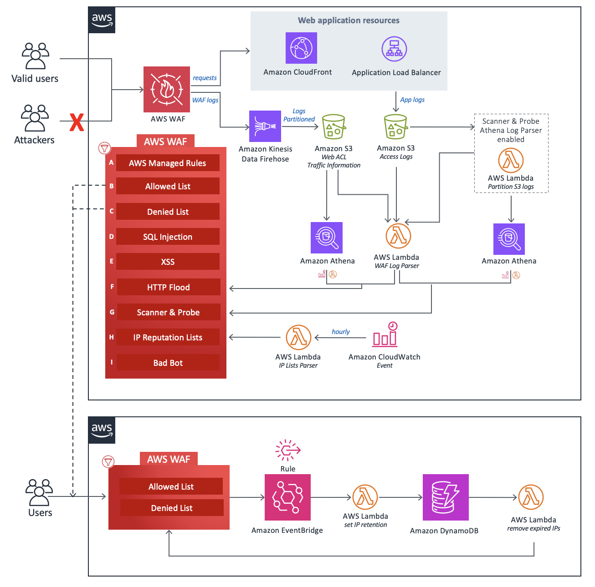

Production-Hardened Setup Serving 50M Requests/Day
CloudFront + WAF is the backbone of our edge security and performance layer. After two years of tuning this setup across three production environments, we've taken our cache hit rate from 45% to 78%, halved origin load, and blocked 2M+ malicious requests daily — all while keeping costs predictable.

This isn't a getting-started guide. This is the production configuration we run today, with real Terraform, real numbers, and the mistakes we made along the way.
CloudFront Distribution Configuration
The distribution config is where most teams leave performance on the table. Here are the critical settings and why they matter.
Cache Behaviors by Path Pattern
A single default cache behavior is a mistake. Different content types need different caching strategies:
| Path Pattern | TTL | Compress | Cache Policy | Origin Request Policy |
|---|---|---|---|---|
/static/* |
365 days | Yes (Brotli+Gzip) | CachingOptimized | None (no headers forwarded) |
/api/* |
0 (no cache) | Yes | CachingDisabled | AllViewerExceptHostHeader |
/images/* |
30 days | No | CachingOptimized | None |
Default (*) |
24 hours | Yes | Custom (vary on Accept-Encoding) | Minimal headers |
Origin Shield
Origin Shield adds a centralized caching layer between edge locations and your origin. For us, it reduced origin requests by an additional 30% because cache fills from different edge locations are consolidated.
Choose the Origin Shield region closest to your origin server, not your users. If your origin is in us-east-1, use us-east-1 for Origin Shield. The goal is to minimize latency on cache misses, not cache hits.
Compression: Brotli + Gzip
CloudFront supports both Brotli and Gzip compression. Brotli provides 15-20% better compression than Gzip for text-based content. Enable both — CloudFront automatically selects based on the client's Accept-Encoding header.
Security Headers via CloudFront Functions
We inject security headers at the edge using a CloudFront Function (not Lambda@Edge — Functions are cheaper and faster for header manipulation):
function handler(event) {
var response = event.response;
var headers = response.headers;
// Strict Transport Security
headers['strict-transport-security'] = {
value: 'max-age=63072000; includeSubdomains; preload'
};
// Content Security Policy
headers['content-security-policy'] = {
value: "default-src 'self'; script-src 'self' 'unsafe-inline' https://cdn.jsdelivr.net; style-src 'self' 'unsafe-inline' https://fonts.googleapis.com; font-src 'self' https://fonts.gstatic.com; img-src 'self' data: https:; connect-src 'self' https://api.example.com"
};
// Prevent clickjacking
headers['x-frame-options'] = { value: 'DENY' };
// Prevent MIME type sniffing
headers['x-content-type-options'] = { value: 'nosniff' };
// Referrer Policy
headers['referrer-policy'] = { value: 'strict-origin-when-cross-origin' };
// Permissions Policy
headers['permissions-policy'] = {
value: 'camera=(), microphone=(), geolocation=(self), payment=(self)'
};
return response;
}CloudFront Functions run in ~1ms and cost $0.10 per million invocations. Lambda@Edge runs in 5-50ms and costs $0.60 per million. Use Functions for header manipulation, redirects, and URL rewrites. Use Lambda@Edge only when you need network access, longer execution time, or request body manipulation.
WAF Association: Which Rules to Enable
We associate a WAF Web ACL with our CloudFront distribution. Here are the rule groups we enable, in priority order:
| Priority | Rule Group | Action | Monthly Cost |
|---|---|---|---|
| 1 | Custom IP Allowlist | Allow | $1 |
| 2 | Rate Limiting (300 req/5min) | Block | $1 |
| 3 | AWSManagedRulesAmazonIpReputationList | Block | $0 (free) |
| 4 | AWSManagedRulesCommonRuleSet | Block | $0 (free) |
| 5 | AWSManagedRulesBotControlRuleSet | Challenge | $10 + request fees |
| 6 | Custom scanner path blocking | Block | $1 |
Cache Key Optimization
This is where we got our biggest performance win. The default CloudFront behavior forwards too many headers to the origin, which fragments the cache and kills your hit rate.
Before Optimization (45% Cache Hit Rate)
- Forwarding all headers to origin (including User-Agent, Referer, Cookie)
- Query strings included in cache key for static assets
- No cache policy — using legacy forwarded values
- Cookies forwarded on all paths (including static assets)
After Optimization (78% Cache Hit Rate)
- ✅ Cache key includes only
Accept-Encodingfor static content - ✅ Query strings stripped from static asset cache keys
- ✅ Cookies forwarded only on
/api/*paths - ✅ Custom cache policy per behavior
- ✅ Origin request policy sends minimal headers
Terraform Configuration
Here's the production Terraform for the full CloudFront + WAF setup:
resource "aws_cloudfront_distribution" "main" {
enabled = true
is_ipv6_enabled = true
default_root_object = "index.html"
price_class = "PriceClass_100"
web_acl_id = aws_wafv2_web_acl.main.arn
aliases = ["www.example.com", "example.com"]
origin {
domain_name = aws_lb.main.dns_name
origin_id = "alb-origin"
origin_shield {
enabled = true
origin_shield_region = "us-east-1"
}
custom_origin_config {
http_port = 80
https_port = 443
origin_protocol_policy = "https-only"
origin_ssl_protocols = ["TLSv1.2"]
}
}
# Static assets — long cache, compressed
ordered_cache_behavior {
path_pattern = "/static/*"
allowed_methods = ["GET", "HEAD"]
cached_methods = ["GET", "HEAD"]
target_origin_id = "alb-origin"
compress = true
cache_policy_id = aws_cloudfront_cache_policy.static.id
viewer_protocol_policy = "redirect-to-https"
function_association {
event_type = "viewer-response"
function_arn = aws_cloudfront_function.security_headers.arn
}
}
# API — no cache, forward everything
ordered_cache_behavior {
path_pattern = "/api/*"
allowed_methods = ["DELETE", "GET", "HEAD", "OPTIONS", "PATCH", "POST", "PUT"]
cached_methods = ["GET", "HEAD"]
target_origin_id = "alb-origin"
compress = true
cache_policy_id = data.aws_cloudfront_cache_policy.disabled.id
origin_request_policy_id = data.aws_cloudfront_origin_request_policy.all_viewer.id
viewer_protocol_policy = "redirect-to-https"
}
# Default behavior
default_cache_behavior {
allowed_methods = ["GET", "HEAD", "OPTIONS"]
cached_methods = ["GET", "HEAD"]
target_origin_id = "alb-origin"
compress = true
cache_policy_id = aws_cloudfront_cache_policy.default.id
viewer_protocol_policy = "redirect-to-https"
function_association {
event_type = "viewer-response"
function_arn = aws_cloudfront_function.security_headers.arn
}
}
# Custom error pages
custom_error_response {
error_code = 404
response_code = 404
response_page_path = "/errors/404.html"
error_caching_min_ttl = 300
}
custom_error_response {
error_code = 503
response_code = 503
response_page_path = "/errors/maintenance.html"
error_caching_min_ttl = 60
}
viewer_certificate {
acm_certificate_arn = aws_acm_certificate.main.arn
ssl_support_method = "sni-only"
minimum_protocol_version = "TLSv1.2_2021"
}
restrictions {
geo_restriction {
restriction_type = "none"
}
}
}
resource "aws_cloudfront_cache_policy" "static" {
name = "static-assets-policy"
default_ttl = 86400
max_ttl = 31536000
min_ttl = 86400
parameters_in_cache_key_and_forwarded_to_origin {
cookies_config {
cookie_behavior = "none"
}
headers_config {
header_behavior = "none"
}
query_strings_config {
query_string_behavior = "none"
}
enable_accept_encoding_brotli = true
enable_accept_encoding_gzip = true
}
}Origin Failover Configuration
We configure an origin group with automatic failover to a static S3 bucket when the primary ALB returns 5xx errors:
resource "aws_cloudfront_distribution" "main" {
# ... other config ...
origin_group {
origin_id = "origin-group"
failover_criteria {
status_codes = [500, 502, 503, 504]
}
member {
origin_id = "alb-origin"
}
member {
origin_id = "s3-failover"
}
}
origin {
domain_name = aws_s3_bucket.failover.bucket_regional_domain_name
origin_id = "s3-failover"
s3_origin_config {
origin_access_identity = aws_cloudfront_origin_access_identity.failover.cloudfront_access_identity_path
}
}
}The failover S3 bucket contains a static "we're experiencing issues" page plus cached versions of critical pages. It's updated daily by a Lambda function that snapshots key pages from the live site.
Cost Optimization
CloudFront costs can surprise you at scale. Here's how we keep them predictable:
| Optimization | Monthly Savings |
|---|---|
| PriceClass_100 (US/EU only) instead of PriceClass_All | ~$400 |
| Cache hit rate improvement (45% → 78%) | ~$1,200 (reduced origin load) |
| Brotli compression (15-20% smaller responses) | ~$300 (reduced data transfer) |
| Origin Shield (consolidated cache fills) | ~$200 (reduced origin requests) |
| CloudFront Security Savings Bundle (committed use) | ~30% discount on baseline traffic |
If you spend more than $500/month on CloudFront + WAF combined, look into the Security Savings Bundle. You commit to a monthly spend and get up to 30% discount. For our $2,800/month spend, this saves us ~$840/month.
Key Takeaways
- Cache key optimization is the #1 performance lever — strip unnecessary headers, cookies, and query strings from cache keys
- Use separate cache behaviors for static assets, API, and default content
- Origin Shield pays for itself if you have traffic from multiple regions
- CloudFront Functions over Lambda@Edge for header manipulation — 6x cheaper, 10x faster
- Enable Brotli compression — it's free and reduces transfer costs by 15-20%
- Configure origin failover — a static S3 fallback is cheap insurance against origin outages
- Consider the Security Savings Bundle for predictable discounts at scale